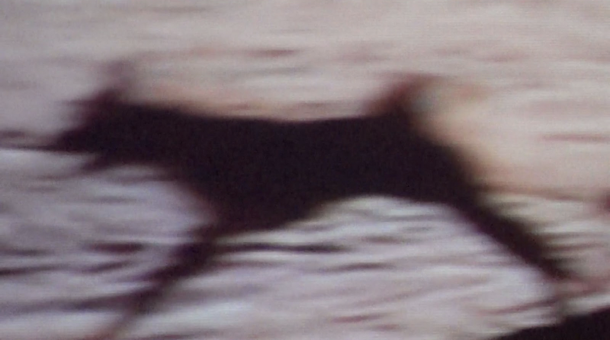

Una crónica de viaje (y sonido) incompleta; un lugar ocupado por mapas y globos terráqueos; una colección de recuerdos enfrentados a la repetición de una imagen imprecisa. En los espacios que quedan entre estas superficies, Rituales de Registro busca reflexionar sobre la relación entre paisaje y archivo en la construcción de comunidades imaginadas y memoria material.
An incomplete travel (and sound) chronicle; a place occupied by maps and globes; a collection of memories facing the repetition of an imprecise image. In the spaces that remain between these surfaces, Ritual Records aims to reflect on the relationship between landscape and archive in the construction of imagined communities and material memory.
↗ Ver en YouTubeWatch on YouTube